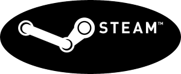

Vertriebsplattformen
Vertriebsplattformen
Heutzutage gibt es sehr viele Vertriebsplattformen, hier werde ich die größten und bekanntesten
vorstellen.
Steam
Steam ist sogesehen das Non Plus ultra unter den Spielvertriebsplattformen
Das System wurde am 12.September 2003 für Windows von Valve
veröffentlicht.Das System ermöglicht sowohl die Online-Verteilung,
Wartung
(Patchen) und Überwachung (DRM) der Spiele als auch die Kommunikation
der Spieler untereinander.
Jeder Spieler hat ein profil, dass er Persönlich
individualisieren kann. Die Spieleplattform hat über 125
Millionen aktive
benutzerkonten. Auf Steam kann man Spiele erwerben und so in seiner
Bibliothek speichern
Steam ist auch für seine Sales bekannt, Jährliche Preisreduzierungen für eine bestimmte zeit.
Uplay
Uplay ist eine Spielevertriebsplattform der Marke Ubisoft. Uplay erlaubt es Spielern
sich miteinander
zu verbinden. Durch das Erfüllen von Actions kann man
verschiedene Belohnungen erhalten.
Mann hat auch hier sein eigenes anpassbares
Profil, jedoch ist es nicht so stark individualisierbar wie Steam.
Origin
Origin ist eine Spielevertriebsplattform von dem Amerikanischen Spiele-Publisher
Electronic Arts
Von den drei berühmtesten Spielevertriebsplattformen ist sie meiner
Meinung nach die schlechteste.
Diebibliothek funktionier sehr gut, so gut wie jede
andere eben. Mann kann Spiele erwerben und dort spielen.
Jedoch lässt die
Interaktion mit anderen Spielern sehr zu wünschen übrig.
